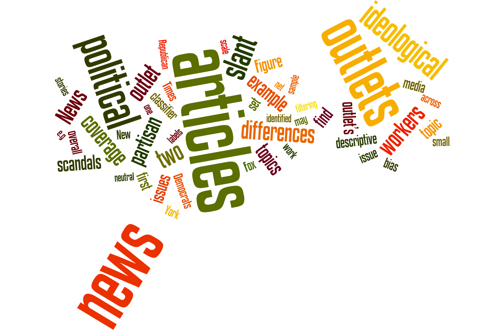

Projects
News Media Production & Consumption

News media are a key source of information for society. How is this source of information produced and how is it consumed? Are news outlets biased? Do readers prefer ideologically biased content?
In a recent work, we examined issue filtering and ideological framing in U.S. news media. Through the use of supervised learning and crowdsourcing techniques, we constructed a representative sample of politically relevant news coverage with ideological position broken down by issue. Our technique not only provides an unbiased ordering of outlets according to their political slant, but also discovers how ideological filtering and framing contribute to the overall ideological position. We are currently extending this work to examine how ideological bias on news outlets change over time in comparison to public opinion polls.
The spread of fake news online is raising serious concerns. We are working on a number of projects to model and quantify such behavior. One example is here. In this paper, we examined the spread of fake news leading up to the 2016 U.S. Presidential elections.
In an upcoming book project, we examine how the news media covered the extraordinary 2016 election, how people reacted to it on social media platforms, and what stuck with the voters. This book is scheduled to be released January 2020.
Social Movements & Media
Studies of social movements have traditionally relied on ethnographic methods to learn about the motives and attitudes of participants. These methods are powerful but they also have certain limitations. For instance, they generally sample only active participants and are therefore unable to draw objective comparisons with non-participants. Also, by construction participants can only be observed or interviewed after the movement has begun; hence objective comparisons with preexisting beliefs and attitudes are difficult. Can we use social media data to fill this gap and use these non-representative noisy data to perform causal inference in the context of social movements? We claim the answer is yes. And here is a short explanation as to why this is the case: 1) the "always on" nature of social media platforms allows researchers to construct ex-post panels even years after the events of interest have taken place, and this is of particular importance in the case of political uprisings that are hard to foresee. 2) They allow for easy sampling of the "right" set of non-participants (control group) to perform comparisons with. 3) The amount of data available is impressive and goes well beyond what can be extracted with a short survey or interview. 4) Information extracted goes beyond individuals and captures organizational structure and network of participants.
Examples studies: In our recent work we introduced a new methodology for quantifying how a movement changes the attitudes and behavior of its participants. In another recent paper, we investigated the value of slacktivists for social movements. We are currently working on determining the value of Social Movement Organizations(SMOs) in online protest movements (a working paper is available here), measuring stickiness of activism and identifying the most (and least) successful recruitment methods. We are also working on new mathematical models of collective action that incorporate the new findings from our data-driven studies.
Social Networks
The power of online social networks lies in their ability to enable the diffusion of information, ideas, and innovations. This significance motivates our work that focuses on understanding the diffusion process, and using this understanding to build technological solutions to facilitate and guide such spread. Our efforts advanced the state-of-the-art in various areas listed below:
Understanding Diffusion: Most research on modeling diffusion focuses solely on the influence of friends and assumes that users are either unaware of or not interested in activity happening outside their ego network. Our work challenges this unrealistic assumption. Our approach produced a cross-models, cross-networks and cross-metrics evaluation framework which takes a strong first step towards attaining reproducibility and testing generalizability in modeling social behavior.
Managing Diffusion: The open nature of online social networks leaves their users vulnerable to the spread of misinformation with possibly devastating implications. Clearly, it is vital to investigate effective methods to limit the spread of misinformation to avoid such societal effects. Our work was the first study to focus on optimally managing the spread of misinformation in online social networks.
Reporting Diffusion: Information trends in online social networks reveal societal needs, fears or interests. They can also help users stay on top of news without having to sift through vast amounts of shared information. We introduced a number of methods (example study 1, example study 2) that improve the state-of-the-art in this area.
Group Dynamics: In Bowling Alone: The Collapse and Revival of American Community, Robert D. Putnam discusses how we are fast becoming disconnected from family, friends, and our democratic structures. Online groups present a possible remedy here. But most online groups are short-lived given their inability to sustain members. So, what makes people stick? Can we predict it? For more, go here.
Measuring and Promoting the Quality of Online Discussions
The National Science Foundation has funded our collaborative research project, Measuring and Promoting the Quality of Online News Discussions?. The project is a joint effort between researchers at the University of Michigan School of Information (Paul Resnick) and the Ohio State University School of Communication (R. Kelly Garrett).
This project will amplify the efforts of people to bring out the best in other people in online conversations, and will make it easier for people to find high quality online conversations. The first goal of the research is to create automated classifiers to measure the quality of everyday online political talk. Classifiers will estimate the quality of online conversations about news articles in public venues such as Twitter, Facebook, Reddit, and the comments sections of news pages. A Conversation Finder tool (a website and a browser extension) will use the automated classifiers to recommend, in real time, venues where particular news articles are being discussed and where the quality scores are high. The second goal of the research is to create a Conversation Coach that helps the general public to improve the quality of conversation spaces they participate in, by helping them craft messages that directly contribute to quality and that indirectly inspire others. It will include a Message Assistant that extracts elements from conversations in order to help people craft messages and a Message Impact Assessor that predicts the likely impact of a draft message on the quality metrics for subsequent conversations.
Example study: When news forums first came to being, scholars hoped that they would create an era of reader engagement and deliberation. Those hopes have only been partially fulfilled. Many news forums today are known for incivility and an aggressively adversarial tone. That drives out participants who would otherwise engage in constructive discussion, and can adversely affect readers' understanding of the news. This has led a number of news organizations in the US to shut down their commenting sites, while others, such as The Guardian, have sought to improve online comments. In 2012 the news organization introduced single-level threading to its commenting system, providing a unique opportunity to examine the influence of that design feature. In a recent paper, we studied this naturally occurring experiment to investigate the impact of conversation threading on user retention as mediated by several potential changes in conversation structure and style and provided an array of recommendations for designers of news commenting sites.
Charitable Giving
How do people make charitable giving decisions? Scholars had to rely on small surveys or experiments to answer this question. Here, we ask the question: can we do better by making use of data that is publicly available online (such as charity evaluation sites and donor reviews) as well as web browsing data that reveals how donors navigate the online charity space?
Take for instance, the following question: Do donors take the efficiency of organizations they contribute to into consideration when making charitable giving decisions? The answer to this question is mostly unknown. A simple analysis of tax return forms of charitable organizations reveal that there is a non-negligible amount of money being donated to charities with extremely high overhead (more than 50% of donations being "wasted" on expenses unrelated to charity cause). This suggests that donors do not consider efficiency of charities as much as one would hope and that there is a sizable amount of waste in the charity marketplace. But to what extend is this true? Are people really not taking the efficiency of charities into consideration or are they stuck with the high-overhead charities because there are no reasonable alternatives for that particular cause with a lower overhead? And how much money could donors collectively save if charities were to go through a recommendation system that identified and presented reasonable alternatives in an algorithmic way? For more, read here.
Let's think of another question: Why do people care about the causes that they do? Does exposure increase interest? We are currently working on this problem in the context of poverty and homelessness. Stay tuned for our results...
Service Projects
- Registration chair for COSN (ACM Conference on Online Social Networks) 2015
- Program Committee Member for:
- WWW (International Conference on World Wide Web) 2015,2016
- ICWSM (International AAAI Conference on Web and Social Media) 2015,2016
- WebSci (ACM Web Science Conference) 2016
- AAAI (AAAI Conference on Artificial Intelligence) 2016
- HCOMP (Conference on Human Computation and Crowdsourcing) 2015
- WSDM(InternationalACMConferenceonWebSearchandDataMining)2014,2015
- COSN (ACM Conference on Online Social Networks) 2014,2015
- ICDM (IEEE International Conference on Data Mining) 2014
- SIGMOD (ACM Special Interest Group On Management of Data Conference) 2013
- Organizer for MSR NYC Data Science Seminar Series
- Instructor for Microsoft Research Data Science Summer School (for more info, please visit the website)